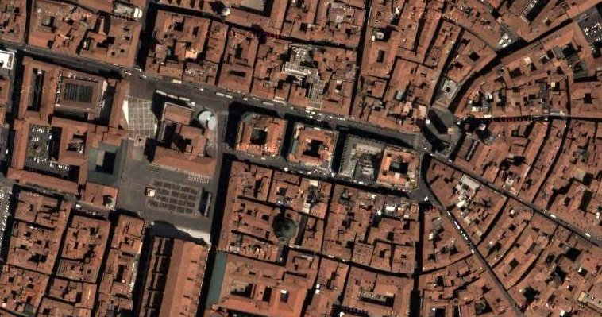
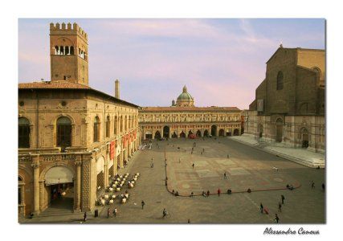
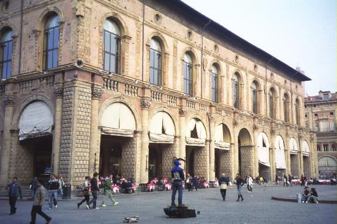
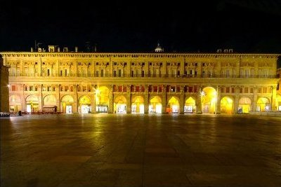
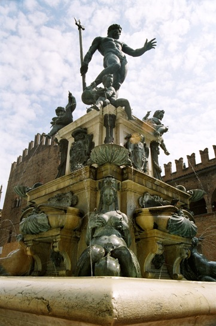
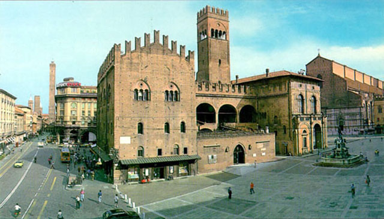
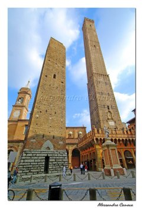
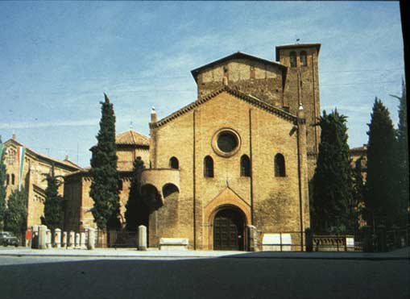

BOLOGNE

Sommaire
- Introduction (Francesca Bernini)
- L'histoire de Bologne (Marco Lenzi, Arianna Bruscella)
- Gastromonie et vins (Martina Ambrosi)
- Manifestations (Martina Ambrosi)
- Itinéraire de visite (Martina Ambrosi)
- La place Maggiore (Martina Ambrosi)
- Le palais du “Podestà (Alexandra Guta)
- Saint Petronio (Mimma Maviglia)
- Saint
Petronio: la nef droite (Martina Petrucciani)
- Saint Petronio: la nef gauche (Vanessa Statella)
- Palais
des Banquiers (Francesca Bernini)
- Palais Municipal (Anna Accorsi)
- La place de Neptune (Alexandra Guta)
- La “Fontaine de Neptune” (Alexandra Guta)
- Palais du Roi
Enzo (Francesca Bernini)
- Salle de la
Bourse (Francesca Bernini)
- Rue Rizzoli, place
de la Mercanzia, palais de la Mercanzia (Maila Mocciaro)
- Les Tours (Anna Accorsi)
- Les
églises de Santo Stefano (Alexandra Guta, Mimma Maviglia, Martina Petrucciani)
au sommaire
Introduction:
Bologne est une
ville italienne, située au nord-est du pays, entre le Pô
et les Apennins. C'est le chef-lieu de la région
Emilie-Romagne (plaine du Pô) et de la province qui porte le
même nom et l'une des villes principales de l'Italie.
Du point de vue
géographique Bologne est située dans une zone de
plaines et de collines, entre la vallée du Reno ed celle du
Savena. La commune se divise en neuf circonscriptions administratives
qui portent le nom de “quartiers”: Borgo Panigale, San
Donato, San Vitale, Savena, Navile, Porto Saragozza, Santo Stefano,
Reno.
Elle est le siège
de la plus ancienne université du monde occidental,
l'université de Bologne (1088) où se sont succédé
des personnages illustres tantôt comme enseignants, tantôt
comme étudiants. Pour son université la ville est
appelée La Dotta (la docte). Bologne a aussi d'autres surnoms
comme La Rossa (la rouge) pour ses toits rouges et pour ses idéaux
politiques de gauche et La Grassa (la grasse) pour ses arts
culinaires. C'est la créatrice de plats universellement connus
et il suffit de citer la “sauce bolonaise”, les “lasagne
au four” et “les tortellini au bouillon”.
Ses habitants sont
les Bolonais, mais très curieusement l'on parle de <<
spaghetti à la bolonaise>>.
Bologne est très
fameuse pour ses tours, les tours les plus importantes sont deux la
tour “Asinelli” et la tour “Garisenda” et
pour ses longues porches qui se trouvent dans le coeur de la ville.
La ville est composée de 36 km d'arcades.
Très célèbre
sont les porches qui relient le centre du pays au Sanctuaire de la
Madonna di San Luca. Le portique est long de 3.5 km et le sanctuaire
se trouve sur une hauteur de 289 mètres et il représente
l'eglise la plus importante des alentours de Bologne; c'est un lieu
de pèlerinage pour les fidèles qui y viennent vénérer
l'image de la Beata Vergine.
Bologne a été
toujours un centre urbain important sous les Celtes, les Etrusques
(Felsina), les Romains (Bononia); puis, pendant le Moyen Age, la
ville était éntourée par des Murs, qui
séparaient la ville de la campagne. Pour entrer dans la ville
il y avait des portes avec leurs ponts-levis.
Aujourd'hui il nous
reste seulement les portes: Porte Maggiore, Porte Saint Mamolo, Porte
Santo Stefano, Porte Lame, Porte Saragozza, Porte Isaia, Porte Saint
Felice, Porte Zamboni, Porte Mascarella, Porte Castiglione, Porte
Saint Vitale.
Important aussi
comme centre culturel et artistique, la ville a été
fondée sur un ensemble homogène de monuments. Bologne
est un célèbre noeud de communications routières,
ferroviaires, voire aériennes, entre le Nord et le centre Sud,
entre la côte tyrrhénienne et la côte adriatique;
un centre remarquable pour ces célèbres foires avec des
industries électroniques, mécaniques et alimentaires.
au sommaire
L'HISTOIRE
DE BOLOGNE
La ville de Bologne
a été fondée en 189 av. J.Ch par les Latins.
Mais les premiers habitants de Bologne remontent à l'âge
du fer (Xe siècle av.J.Ch).
De la fin du VIe
siècle à la moitié du IVe siècle,
Bologne (appelée alors Felsina) fut habitée par les
Etrusques et ensuite elle passa dans les mains des Gaulois Boi. En
191 av.J.Ch les Romains vainquirent les Gaulois Boi et fondèrent
la colonie de Bonomia le long de la rue Emilia. Habitée depuis
le début par 3000 colons, à l'époque impériale
sa population attaignait déjà les 10000 habitants.
Après une
brève et obscure domination ostrogothe, Bologne continua
pendant le VIe siècle et pendant tout le VIIe
siècle à dépendre de Ravenna. Puis, les Lombards
conquérirent la ville en 727. Mais cette domination fut très
brève parce que, après la descente en Italie des
Francs, Bologne, avec l'exarchat fut accordée au Pape. En même
temps, déjà après l'an mille, dans la ville
allait se former une des premières mairies de l'Italie du
Nord. La ville commence à s'étendre: à la fin du
XIe siècle il y avait déjà
l'Université qui, conventionnellement, on considère
fondée en 1088 ; en 1116 les privilèges accordés
par Henri V marquent aussi formellement la naissance de la mairie; et
au cours de la seconde moitié du XIIe siècle
se rend nécessaire le bâtiment d'une nouvelle enceinte
fortifiée qui double la surface urbaine, terminée en
1192. Le siècle suivant sera pour Bologne, le siècle le
plus glorieux de son histoire. En effet, au XIIIe siècle,
la ville prend une position prédominate sur toute l'Emilie et
la Romagne. On bâtit les tours, appelées Asinelli et
Garisenda, on élargit les routes, on ouvre une grande place
autour des tours, on édifie l'église de Saint François
et on élargit la place “Maggiore”, en érigeant
d'abord le vieil hôtel de la ville sur l'endroit du précédent
“Palais du Podestà”, et puis le nouveau, connu
sous le nom de “Palais du Roi Enzo”. Ce sont les années
les plus fastueuses de la Mairie qui fut la première en Italie
à libérepodesta.jpgr les esclaves par une loi de 1256.
En outre, à la fin du siècle, la ville de Bologne
atteint les 50000 habitants, en devenant une des dix premières
villes d'Europe. En outre, on commence la construction d'une autre
enceinte fortifiée pour comprendre dans la ville les bourgs
qui se trouvaient à l'extérieur des murs. Cette
enceinte donnera à la ville la traditionnelle forme d'un
hexagone. Ces murs seront terminés en 1374 ce qui représente
un signe de l'arrêt économique et de la régression
politique que Bologne est en train de traverser. En effet les
affrontements entre Guelfes et Guibelins portent à la fin du
régiment républicain et à l'instauration des
gouvernements des seigneurs, comme les Visconti. En 1300, Bologne va
s'enrichir de nouveaux palais et dans la place “Maggiore”
va se lever l'église de Saint Petronio qui represénte
l'autorité de la Mairie en opposition à la cathédrale,
mais la grande croissance de 1200 est finie. La ville ne réussit
pas à devenir une capitale régionale et elle est de
plus en plus sous la sauvegarde de Rome. Au XVe siecle, après
les affrontements religieux , la seigneurie des “BENTIVOGLIO”
s'affirmera, elle s'écroulera au début du siécle
suivant avec le palais du même nom, sous les coups de la
révolte populaire. En 1506, l'armée de Pape Jules II
entre à Bologne qu'à partir de 1513, fera partie de
l'état de l'église. De ce temps-là la ville ne
sera plus une des protagoniste de l'histoire et jusqu'à la
révolution française les habitants de Bologne pourront
s'occuper seulement de fêtes, d'art, de spectacles et de
carnavals. La domination de l'état pontifical connâit
une interruption en 1796 quand les armées de Napoléon
entrèrent dans la ville. Les terres et le bien de l'église
sont expropriés et Bologne se transforme de ville industrielle
en grande province agraire. En 1815 la restauration du congrès
de Vienne ramène la ville a l'èglise, mais désormais
les idèes libérales s'y sont affirmèes. La ville
participe activement aux luttes du “risorgimento” et en
1859 elle passe faire partie du nouvel état italien. Entre le
XIXe et le XXe siècle des modèles urbanistiques
europèens s'imposent: la ville s'embellit avec des jardins
publics et de grands boulevards. Aujourd'hui Bologne est devenue un
grand pôle industriel et culturel, au point qu'elle a conquis
le titre de capitale européenne de la culture en 2000.
au sommaire
GASTRONOMIE
ET VINS
La gastronomie de
Bologne est très célèbre.
Les specialités
les plus connues de la cuisine de Bologne spodesta.jpgont la
mortadella et les tortellini en bouillon: les variantes à la
sauce tomate et à la creme sont modernes.
D'autres plats de
pâtes connus sont: les tagliatelle, les lasagne, les
tortelloni,
les strichetti et
les parpadelli; moins connue c'est la soupe de paradis à base
d'oeuf et de pain râpé. Comme deuxième plat: les
côtelettes à la bolonnaise, la petite friture et le
poulet à la “cacciatora”. Comme gâteaux le
pan speziale (classique gâteau de Noël), la spongata (pâte
feuilletée avec du miel et des fruits secs), le gâteau
de riz, les sfrappole et les ravioli de S. Joseph (avec de la crème
pâtissière).
Les vins DOC blancs
sont: le Pignoletto, le Pinot blanc, le Savignon, les vins DOC rouges
en revanche sont: le Barbera, le Cabernet et le Merlot. Un autre vin
DOC de Bologne c'est le Montuni del Reno (blanc sec, demi sec ou
doux).
au sommaire
MANIFESTATIONS
On a des
manifestations et étalages d'art antique, moderne et
contemporaine tous les ans.
Parmi les festivals
de Bologne il y a le Festival de Musique et dans le quartier de la
foire: chaussures, constructions, livres pour la jeunesse, parfums,
agriculture et le Motor Show.
au sommaire
ITINÉRAIRES
DE VISITE
Quelques itinérares
suivent le perimètre de la ville même si les murs ont
disparu: la ville peut aussi être visitée à pied
ou en autobus.
au sommaire
LA
PLACE MAGGIORE
c'est le salon de
la ville, jadis le centre politique et religieux, aujourd'hui l'un
des points de réunion de la ville, lieu destiné à
des rencontres, des concerts ou de simples promenades en soirée.
La place Maggiore est la principale place de la ville, la forme
actuelle date du XVe siecle. Cette place contient les
principaux bâtiments médiévales de la ville. En
effet, le palais d'Accursio, la Basilique Saint Petronio, le Palais
des Notaires du XIV-XVe siècles, le Palais du
Podesta et le Palais des Bancs donnent sur cette place. La place est
adjacente à une autre place remarquable de la ville, la Place
de Neptune.

au sommaire
LE
PALAIS DU “PODESTÀ”
Adjacent au Palais
du Roi Enzo, se dresse le Palais du “Podestà”. Il
a été bâti à partir de 1485, probablement
suivant un modèle d'Aristotele Fieravanti, sur l'endroit du
“palatium vetus”. Il a été le premier siège
du gouvernement italien, démoli par Giovanni II Bentivoglio
l'année précédente. Le rez-de-chaussée à
arcades est traversé par deux routes qui se croisent sous une
grande voûte, dont les coins montrent quatre terres cuites
d'Alfonso Lombardi (1525), représentant les patrons de la
ville. Il est surmonté d'une tour, appelée “Tour
de l'Arengo”, qui remonte à 1212. Cette tour abrite une
cloche de 46 quintaux: le “Campanazzo”, qui sonne aux
occasions importantes. Les voûtes étaient animées
par les boutiques des marchands, fruitiers et artisans. Le palais est
ouvert seulement à l'occasion d'expositions ou d'événements.

au sommaire
SAINT
PETRONIO
Saint Petronio, sur
la “Place Maggiore” est l'église principale de
Bologne.
Ses grandes
dimensions la placent au cinquième rang parmi les plus grandes
églises du monde entier.
Elle est dédiée
au saint patron de la ville qui en fut l'évêque au
cinquième siècle.
Elle se trouve en
proximité du Palais Municipal et du Palais de Roi Enzo.
Sa construction
remonte à 1390 et fut terminée en 1659, c'est un
illustre exemple du gothique italien.
La façade
est restée inachevée.
Formée de
trois portails, le central “Porte Magna” est orné
de sculptures, dans les portails mineurs il y a des statues
d'artistes du XVIe siècle; sur son portail
principal, on peut admirer les histoires de l'ancien et du nouveau
testament.
au sommaire
San
Petronio: la nef droite
L'intérieur
de l'église de Saint Petronio, solennel et majestreux, est
divisé en trois nefs soutenues par dix piliers. Dans les nefs
latérales s'ouvrent vingt-deux chapelles et dans une de
celles-ci est conservé un orgue qui fonctionne encore,
construit vers 1470: il s'agit du plus ancien orgue encore utilisé
au monde. Dans la nef droite on peut admirer:
 Dans la deuxième
chapelle, des fresques du XVème siècle et un
polyptique attribué à Tommaso Garelli,
Dans la deuxième
chapelle, des fresques du XVème siècle et un
polyptique attribué à Tommaso Garelli,
Dans la troisième
chapelle, une fresque à panneaux d'un artiste lombard de la
seconde moitié du XVème siècle,
Dans la quatrième,
il y a une transenne de marbre, des fresques du Xvème siècle
et des vitraux de Giacomo da Ulma,
Dans la cinquième
il y a la Pietà d'Amico Aspertini,
Dans la sixième
il y a Saint Girolamo un tableau de Lorenzo Costa et La Vierge à
l'Enfant en terre cuite,
Dans la huitième
fermée par une transenne de marbre, à l'autel, sur
lequel il y a un retable de marbre basé sur un dessin de
Vignola et des stalles marquetées de 1521,
Dans la neuvième,
il y a une statue de Saint Antonio de Padova attribuée à
Girolamo de Treviso et, aux murs, sont représentés les
Miracles du Saints du meme artiste,
En
face de l'onzième chapelle, dans une niche, il y a la Peine
sur Christ mort, un groupe en terre cuite de Vincenzo Onofri.
au sommaire
San
Petronio: la nef gauche
L'intérieur
de San Petronio est de structure gothique et il présente trois
nefs.
A partir de son
centre nous pouvons jouir d'un spectacle magnifique.
Le volume et
l'élégance discrets de cette contruction conjuguent
harmonieusement l'art et la religion.
A nos pieds il y a
un grand cadran solaire de 68 mètres de long, les rayons de
soleil pénètrent à l'intérieur pour
marquer les jours et les mois, le début et la fin de chaque
saison.
Dans le
Presbytérium on trouve une tribune projetée par Vignola
au dessus de l'autel majeur, un choeur marqueté de 1477 et des
arcs, celui de droite de 1470-1478 est parmi les plus anciens
d'Italie.
La nef à
gauche se subdivise en neuf chapelles:
-Dans la Neuvième
chapelle il y a une grille construite en 1482.
-Dans la Huitième
chapelle une représentation de St. Rocco.
-Dans la Septième
chapelle il y a un tableau représentant la Sainte Vierge et
d'autres Saints.
-Dans la Cinquième
chapelle il y a le Martyre de St. Sebastian.
-Dans la Quatrième
chapelle il y a un autel et les parois sont revêtues par des
fresques.
-Dans la Seconde
chapelle il y a une grille en fer et une décoration du
dix-huitième siècle.
Le Palais des
Banquiers se trouve en face du Palais Communal, dans la Place
Maggiore, où aujourd'hui on trouve les magasins les plus
élégants de la ville. Il a été construit
en 1412 là où avaient lieu les opérations de
change.
Le palais fut
achevé par l'architecte Jacopo Barozzi, dit Vignola, qui a
projeté la façade actuelle.
Il
y a un long portique qui fait parti du Portique du Pavaglione.

au sommaire
PALAIS
MUNICIPAL
Connu aussi sous le
nom de Palais d'Accursio, il s'agit d'un imposant palais-forteresse
qui se dresse sur la Place Maggiore. Aujourd'hui il est le siège
de l'Hôtel de Ville. Il est caractérisé par une
succession de styles qui se sont superposés au cours des ans.
La partie en style gothique, avec des fenêtres géminées
en marbre et des décorations en terre cuite, remonte au XVe
siècle. A gauche se trouve un portail du XVIe
siècle surmonté par la statue du pape Grégoire
XIII.
A l'intérieur
du complexe on peut visiter une succession de magnifiques chapelles
en prenant l'escalier du XVIe siècle qui de la cour
en porche mêne au premier étage.
LA PLACE NEPTUNE
LA PLACE NEPTUNE
fut réalisée en 1564 à la suite de la démolition
d'un groupe de maisons et de boutiques. A son centre la Fontaine de
Neptune, alimentée par l'eau de la Source Remonde provenant du
col de Saint Michel au Bois. Elle fut réalisée par Jean
de Bologne qui la termine en 1567.

au sommaire
LA “FONTAINE
DE NEPTUNE”
La “Fontaine
de Neptune”, appelée aussi “Fontaine du géant”,
est une fontaine monumentale qui se trouve sur la “Place
Neptune” à Bologne. Elle est considerée une des
plus belles fontaines du XVe siecle.
La statue fut
commandèe par le Cardinal Lègat de Bologne Charles
Borromée qui voulut réaménager la zone de la
“Place Maggiore” , à l'aide de l'évêque
Pier Donato Celsi.
Le socle de
l'oeuvre a été réalisé par Tommaso
Laurenti en 1563 et l'imposante statue en bronze qui le surmonte, le
Dieu Neptune, a été réalisée par le
sculpteur flamand Jean de Boulogne. En particulier, l'oeuvre
représente Neptune, avec le trident, qui est en train
d'apaiser les vagues; il y a aussi des putti avec des dauphins et en
bas il y a quatre sirènes.
La
construction de la fontaine, terminée en 1565, a été
financée par les maisons et les boutiques adjacentes.
au sommaire
Palais du Roi
Enzo:
Le Palais du Roi
Enzo se trouve dans la Place de la Fontaine du Neptune.
Il a été
construit en 1245.Dans cet édifice fut incarcéré
le Roi Enzo, fils de Fréderic II, battu et fait prisonnier par
les Bolonais pendant la Bataille de Fossalta (1249).
Le palais a été
restauré par Alfonso Rubbiani (1095-1913) qui lui a restitué
l'aspect médiéval grâce à l'introduction
d'un couronnement crênélé et de deux fenêtres
trilobes.
Au rez-de-chaussée
étaient gardées les armes et les machines de guerre de
l'armée bolonaise, alors qu'au premier étage se
tenaient les séances des conseils populaires. Remarquable la
Salle du XIV siècle.
À
la sortie de la Place du Neptune on tombe sur une grande rue connue
sous le nom de “Mercato di Mezzo” et aujourd'hui connue
comme Rue Rizzoli.

au sommaire
Salle de la
Bourse:
La Salle de la
Bourse se trouve à l'entrée de la Place du Neptune.
Elle
est un salon liberty construit à la fin du XIXème
siècle pour accueillir la Bourse de Bologne, aujourd'hui
siège d'une librarie et d'une grande médiathèque.

au sommaire
Rue Rizzoli, place
de la Mercanzia, palais de la Mercanzia
Nous nous trouvons
rue Rizzoli, l' un des as principaux du mouvement urbain, lieu de
promenade et de rencontre dans ses élégants cafés.
Elle débouche Place de Porte Ravegnana, où s' élèvent
les deux tours penchantes. À côté il y a Place de
la Mercanzia dont on peut admirer les palais, notamment le Palais de
la Mercanzia. Il s'agit d' une construction avec una façade en
briques et en pierre d' Istria et une haute loge remontant à
la période du gothique attardé. Il était le
siège de la douane. La construction a commencé en 1348
sous la direction du gonfalonier du peuple, Antonio di Vincenzo, mais
le Palais à été remanié plusieurs fois.
au sommaire
LES TOURS
Les tours de
Bologne Jouèrent une importante fonction de signalation et de
défense et notamment elles constituaient un signe de prestige
pour la famille qui y démeurait. A la fin du XIIe siècle
on en comptait 100 dont il n'en reste aujourd'hui que quinze environ.
Les deux tours sont
le symbole de Bologne. La plus haute est la tour “Asinelli”
construite pendant la première décennie du Xe
siècle, selon la tradition par la famille Asinelli, mais
plus probablement comme tour de vedette civique, en effet la base a
été modifiée en 1488 pour accueillir les soldats
de garde.
Cette tour est
haute de 97 mètres, elle a une inclinaison de 2,23 m et au
centre il y a un grand escalier de 498 marches qui porte au sommet,
duquel on peut admirer la ville de Bologne.
La
plus petite est la tour Garisenda, probablement de la même
époque que sa voisine, elle a une hauteur de 48 mètres,
mais ce qui frappe le plus est sa forte inclinaison de 3,22 m due à
un affaissement du terrain plus prononcé. À la base de
la tour on peut voir une plaque où on peut lire les vers avec
lesquels Dante Alighieri la mentionne.

LA RUE SAINT
STEFHANE c'est une des plus caractéristiques rues de Bologne,
elle prend le départ de la porte Ravegnana et se dirige vers
la porte Saint Stéphane. La rue est une théorie
d'anciens palais: au numéro 1 la tour Alberigi haute de 30
mètres, à sa base il y a une boutique ouverte en 1273.
Après
queques mètres s'ouvre la place Saint Stephane.
Sur LA PLACE SAINT
STEPHANE donne l'ensemble des édifices sacrés de
Bologne dédies au protomartyr, mais aussi le palais Bolognini
du XVe siècle, la maison Tacconi avec des façades
du XVe et du XVIe siècles, un autre
palais Bolognini qui présente des décorations
classiques à côté du style gothique.
La Place Saint
Stephane aujourd'hui costitue l'ancien c½ur de Bologne. Dans la
charmante place triangulaire, le lieu la plus sacré de
Bologne, on trouve l'ensemble des sept Eglises. Ces églises en
réalité ne sont que quatre, elles forment une
reconstitution symbolique des lieux de la passion du Christ.
Vu
de la place le complexe de saint Stéphane s'articule de
gauche à droite à partir de l'église consacrée
aux saint Vitale e Agricola, puis l'eglise centrale du Saint
Sépulcre hoctagonale et enfin l'église du Crucifix.
LA FAÇADE
EXTÉRIEURE DE LA BASILIQUE DE SAINT STÉPHANE

La basilique de
Saint Stéphane est un des édifices sacrés les
plus beaux de Bologne.
Elle se trouve dans
le place homonyme et est connue aussi comme le complexe des “Sept
Eglises”.
Flanquée
d'un clocher cylindrique de style ravennate, l'église a été
reconstituée après un furieux incendie en 1141 et
consacrée en 1184.
au sommaire
Les
églises de Santo Stefano
Le
tour commence par l'église du Crucifix. C'est un édifice
à l'aspect roman remontant au Xeme siècle, mais il a
subi plusieurs réaménagements. La chaire remonte à
1488 alors que les fenêtres en ogive et la rosace ont été
ouvertes en 1895. Au centre pend un grand crucifix de Simon des
Crucifix. La crypte, fait bâtir par l'abbé Martin pour
garder les reliques des saints Vitale et Agricola, a été
réaménagée plusieurs fois.
L'église
du saint Sépulcre à un plan polygonal avec péribole,
tribune et coupole. Elle remonte probablement au Veme siècle,
mais a été restructurée entre le XIème
siècle et le XIIème siècle. Sept colnnes en
marbre appartiennent à l'antique construction du Veme siècle,
les autres colonnes remontent à la reconstruction bénédictine
du XIIème siècle. L'édicule central contient
l'urne des reliques de St. Pétrone évêque de
Bologne au Veme siècle et patron de la ville. Elle a été
remaniée en grande partie, mais les deux plaques qui sont à
l'intérieur avec des décorations en enroulement
d'époque romane ont une grande valeur artistique..
L'église
des saints Vitale et Agricola a trois nefs séparés par
des piliers en forme de croix alternés à des colonnes,
elle possède trois absydes demi-circulaires. les colonnes en
marbre et le chapiteau ionique à dronite près de
l'autel principal sont romanes.
Dans
les absydes mineures sont situés les sarcophages des martyrs
Vitale et Agricola.
De l'Église
de Saint Vitale et Agricola, on passe à l'église du
Saint Sepulcre et après on débouche dans la Cour de
Pilate au centre de laquelle se trouve un bassin en marbre du VIIIe
siècle, avec une inscrition longobarde en bas.
Du porche on passe
à l' Église de la Trinité, avec le groupe en
bois de l' Adoration des Rois Mages et à droite on arrive dans
le cloître des Benedictins, cloître roman à double
galérie, lapidaire des Morts de guerre bolonais.
De
la loge du cloître on entre dans un petit musée où
il y a des peintures de l'école bolonaise du XIVe
et XVIIe siècles et aussi des sculptures de
Giovanni di Balduccio et des orfèvreries.